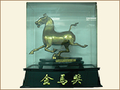
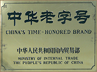
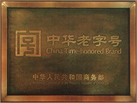

达仁堂是有着三百年历史的乐家老铺的正宗后裔，由乐氏第十二代传人乐达仁先生于1914年在天津创办。乐家老铺以其用药地道、炮制如法深得民间信任，并于1723年承办御药，名声显赫。达仁堂取自创始人乐达仁先生名字，达即通达之意，仁代表仁爱之心。近百年来达则兼善，仁者爱人作为达仁堂独有的个性文化，已经成为一种企业精神。
达仁堂具有三百余年家传秘制的制药经验和对先进技术的兼收并蓄，加上几代人传承和恪守的经营信条只求药料真实，不惜重资，炮制之术必求其精，使达仁堂品牌经历百年，历久弥新。
达仁堂始终恪守炮制虽繁必不敢省人工，品味虽贵必不敢减物力的祖训，由于质量上乘，获得了饮片华北第一，蜜丸全国之王的美誉。二十世纪二十年代盛传的一句名 言就是达仁堂的药望之似不甚宝贵，服之实效应如神。解放前京津一带名医开方时，都指定患者购买达仁堂的药。从1917年起，达仁堂先后在北京、大连 、上海、香港等地开设了18家分号，销售药物1000余种。1980年以后，达仁堂进入快速发展的全新历史时期，在人才、装备、技术、管理、产品等五个 方面形成强大阵营，自1991年起先后荣获全国企业管理优秀奖等国家级最高奖项。九十年代，达仁堂全身心地投入到中药现代化的改革进程中，成为中国中药现 代化的一面旗帜，首开中药制药企业贯彻GMP先河。此后，达仁堂先后被认定为中华老字号、国家一级企业；达仁堂清宫寿桃丸传统制作技艺入选国家级非物质文化遗产名录。
2001年，达仁堂按照国际一流标准，兴建位于天津经济技术开发区的21世纪智能化中药产研基地、中国中药现代化的示范工程现代中药产业园，深受国内外专家关注，被天津市政府列为中药跨越式发展的重要举措。以此为标志，达仁堂掀开全新篇章，以广博深厚的文化和勇于创新的精神，进军国际市场，走向世界舞台，开始全新的发展里程！
|  | 1989年3月达仁堂制药厂获得中国企业管理协会颁发的1988年度企业管理优秀奖 |

|
1991年达仁堂荣获国家质量管理奖 |

|
1991年达仁堂制药厂被国务院授予国家一级企业称号 |
|  | 1993年11月9日达仁堂制药厂被国内贸易部评为中华老字号 |

|
2011年5月达仁堂制药厂清宫寿桃丸传统制作技艺入选国家级非物质文化遗产名录
|
|  |
2011年6月1日达仁堂制药厂被国家商务部评为中华老字号
|